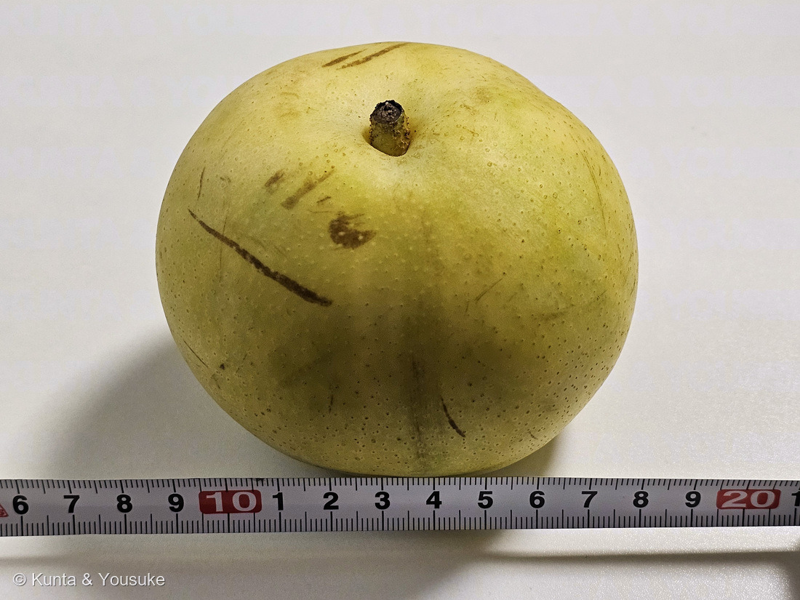
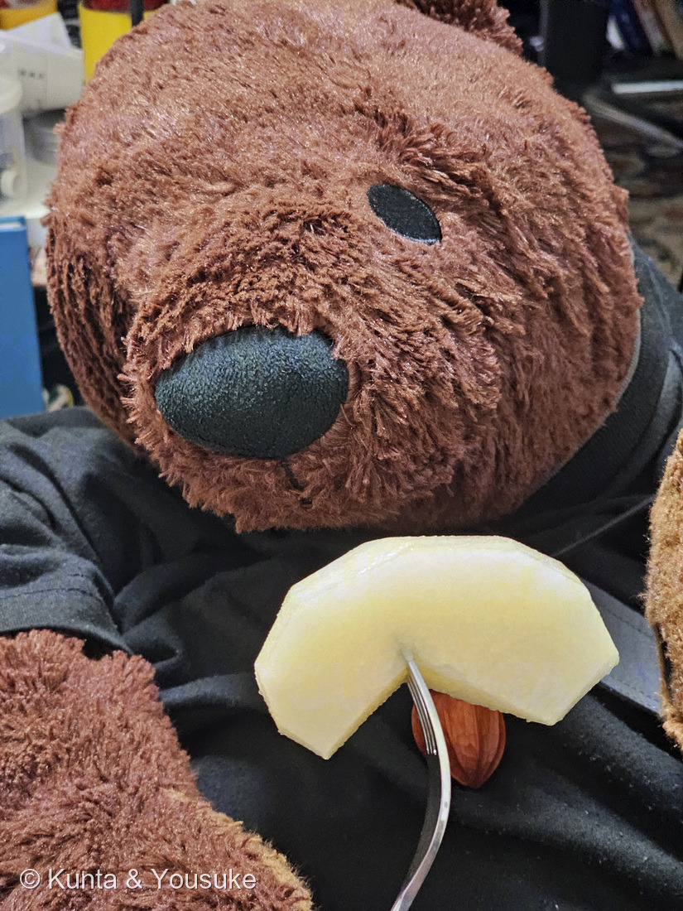
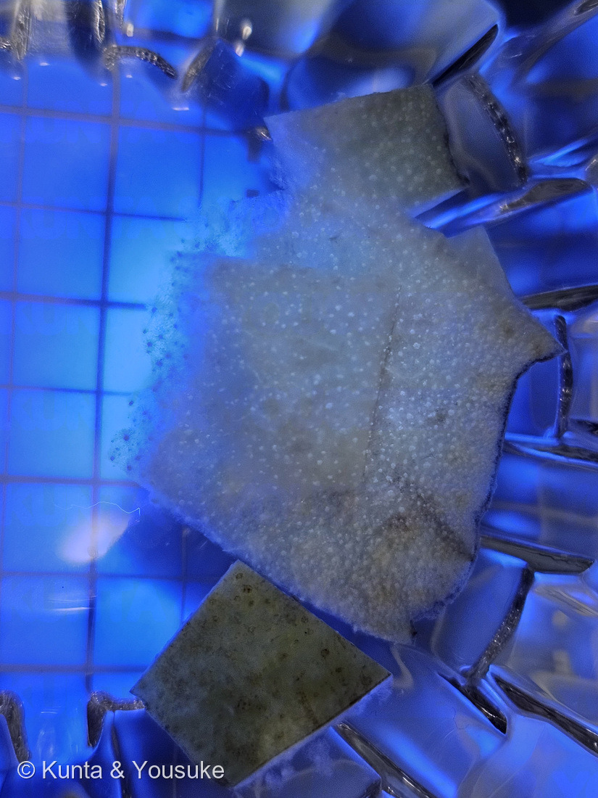
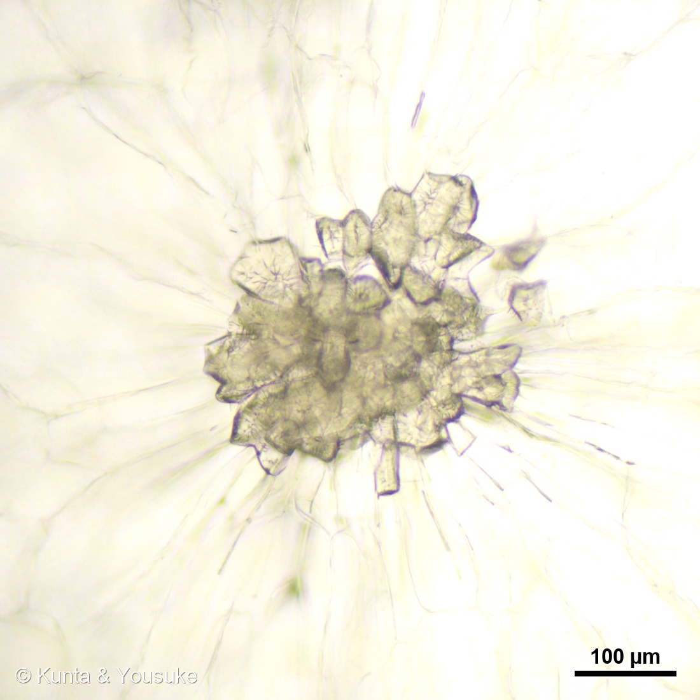
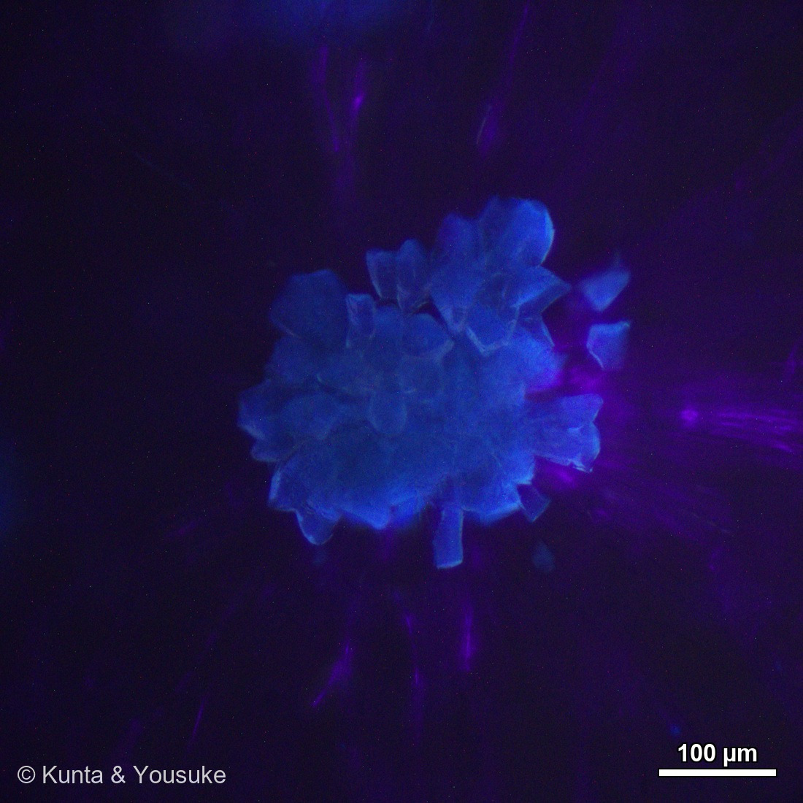
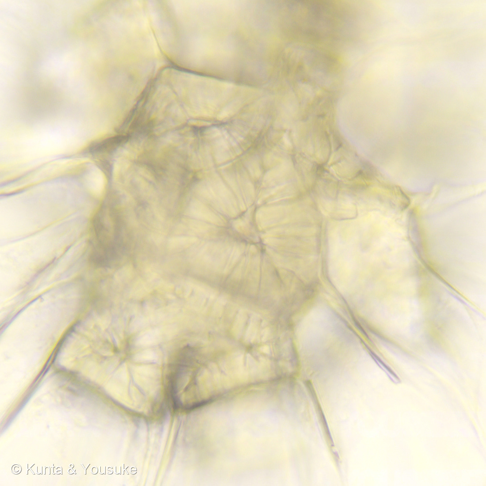
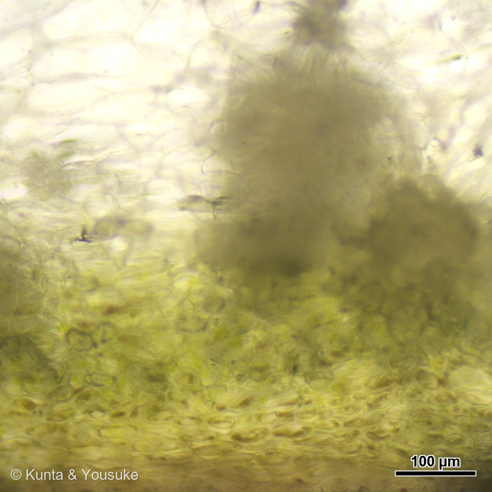
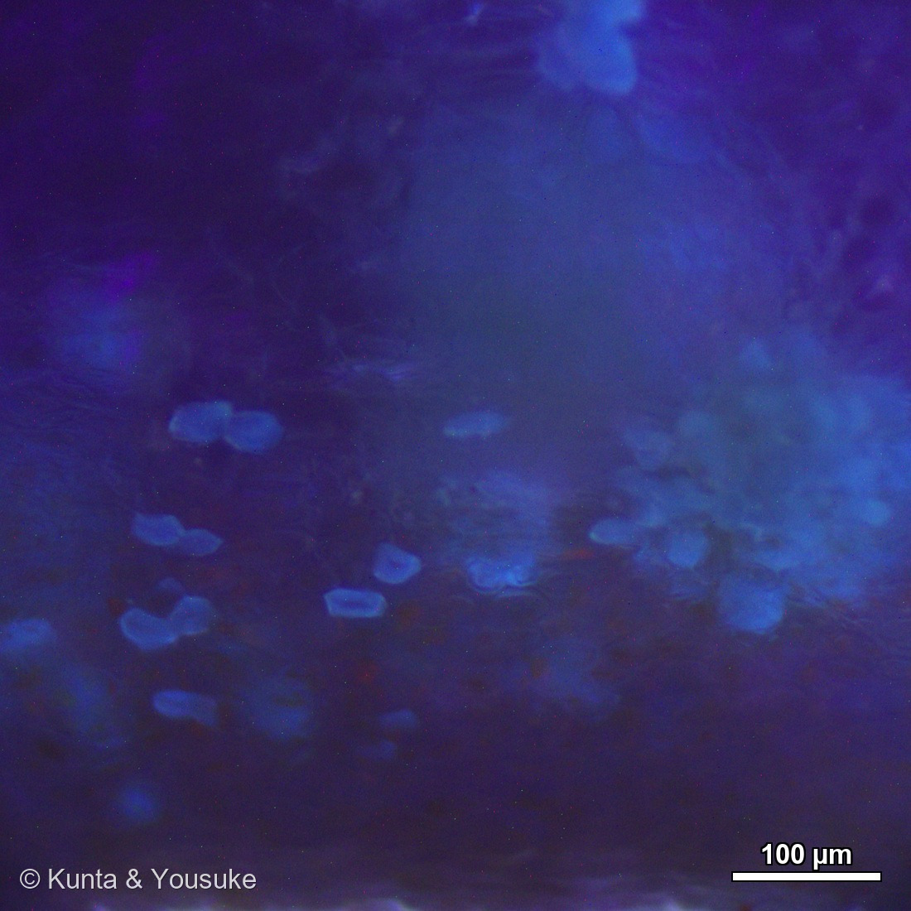

地図を読み込んでいるよ…
🔍 写真も地図も、押しているあいだ拡大して見られるよ（スマホは指を置いてすこし待ってね）。
🌍 の地図＝この子がもともと自生している場所を緑に。中国大陸から持ちこまれたと考えられるヤマナシ（Pyrus pyrifolia var. pyrifolia）を原種として、日本で改良された栽培品種だよ。ヤマナシは本州の中部以南・四国・九州に生育するけれど、人里の近くにしか自生していない（日本語版Wikipedia）。くわしくは下の地図の説明を見てね。
⭐この緑は、ふたつのことがまざっているよ＝ひとつは「原種のヤマナシがいる場所」、もうひとつは「そのヤマナシがどこから来たか」。⭐日本語版Wikipediaは、ニホンナシを「本州（中部以南）、四国、九州に生育する野生種ヤマナシを原種として改良された栽培品種」とする＝だから日本を塗った。⚠⚠ところが、そのすぐあとにこう書いてある＝「ヤマナシは人里付近にのみ自生しており、アジア大陸から人の手で持ち込まれたと考えられている」＝⭐⭐つまり、日本のヤマナシ自身が、大むかしに人が運んできた木かもしれないんだ＝だから中国も塗ったよ。⚠中国は省をしぼらずに全部を塗った＝出典が「アジア大陸」としか書いていないから（273 クサギと同じあつかい）。⭐⭐⭐この「人里の近くにしか自生していない」という一行は、とても大事だと思う＝ふつう、自生している木は人のいないところにも生えているものだから――⭐人里にしかいないということは、人がいるところに運ばれてきた、ということなんだ。⭐おなじ考えかたは258 ナギでも出てきたよ＝よく見かける場所が、その木のふるさととはかぎらない。⚠そして、いま食べられている品種は、そのどちらとも少しちがう＝この二十世紀は1888年に千葉県で見つかった一本の苗木の子孫で、いまの主産地は鳥取県だよ（⭐本文の二十世紀の節を見てね）。⭐同じバラ科では255 カリンが中国、264 アメリカテマリシモツケが北アメリカ、043 ワイルドストロベリーがヨーロッパ＝⭐⭐この子は、その中でいちばん「東アジアの果物」だね。
⚠ 地図は国（日本と中国だけ県・省）までしか塗れないから、ほんとうの分布より広く見えていることがあるよ。地図はだいたいの場所。正確なところは、上の文を見てね。
ナシ（梨・二十世紀）
Pyrus pyrifolia (Burm.f.) Nakai var. culta (Makino) Nakai
属名の意味 · ⭐Pyrus＝ラテン語でナシ 種小名 · ⭐⭐pyrifolia＝pyrum（ナシ）＋folium（葉）で「ナシのような葉をもつ」 別名 ニホンナシ（日本梨）・和梨 品種 二十世紀（にじっせいき）
バラ科 · Rosaceae（ナシ属 Pyrus・バラ目 Rosales）── ⭐図鑑で8人目のバラ科（024 シモツケ・030 バラ・043 ワイルドストロベリー・139 サクラ・143 シャリンバイ・255 カリン・264 アメリカテマリシモツケ）／⚠科は104のまま
燻太さんの言葉「今晩のデザートの二十世紀梨、つまりナシだよ。みずみずしくって美味しい和梨の品種。」「透過光だとざらざらした結晶のようだけど、紫外光を横から当てて観察すると、青白く光るクリスタルだ。」「主成分がリグニンだから、導管と同じように光るのかな？」── ⭐⭐⭐その見立て、3つとも当たっていたよ
⭐⭐⭐ 名前と学名の由来 ── ナシ属の、ナシのような葉の
- 属名 Pyrus はラテン語でナシ。種小名 pyrifolia は「ナシのような葉をもつ」（pyrum＝ナシ ＋ folium＝葉）。
- ⭐読むと、ちょっと変だよね。「ナシ属の、ナシみたいな葉の」──同じことを2回言っている。
- ⭐⭐⭐理由は、名前の後ろの (Burm.f.) Nakai のカッコにあるよ。カッコは「もとは別の属に置かれていた」という印なんだ。
この木を最初に記載したのは、オランダの植物学者ブルマン（子）で、1768年の『Flora Indica』。そのとき彼が置いたのは──イチジク属（Ficus）だった。名前は Ficus pyrifolia、つまり「ナシのような葉をもつイチジク」。 - ⭐⭐そのあと1926年に、日本の植物学者・中井猛之進（なかい たけのしん）がナシ属へ移した。でも種小名は規則で変えられないから、「ナシのような葉の」がそのまま残った。
- ⭐⭐⭐⭐⭐つまり、この子の名前はむかしのまちがいの化石なんだ。「イチジクだと思われていた時代」が、種小名の中にそのまま保存されている。
- ⚠和名の「ナシ」の由来は、はっきりしていない。「中白（なかしろ）」から、「風なし」から、など諸説あるけれど、どれも決め手がないよ。
⭐⭐ この植物のこと ── 1本では実がならない木
- バラ科ナシ属の落葉高木。今回の実は直径およそ10センチ（写真①のメジャーで、10センチ＝2591ピクセルと測ってから換算した。⚠メジャーは机の上で実より手前にあるから、±0.5センチくらいの幅は見てね）。出典では二十世紀は300グラムくらい。
- ⭐⭐果皮の色で「青梨」と「赤梨」に分かれる。青梨＝コルク層におおわれて淡い黄緑色のまま／赤梨＝初夏にコルク層が発達して褐色になる。二十世紀は青梨の代表品種で、写真①のあの色がまさにそれだよ。
- ⭐⭐⭐⭐そして、ナシは1本では実がならない。自家不和合性（同じ品種どうしでは実がつかない性質）がとても強いんだ。S1からS9の「S因子」という遺伝子がそれを決めていて、品種の組み合わせによっても実らないことがある。⭐だから梨園では、かならず別の品種を混ぜて植える。──お店に並ぶ二十世紀は、どれも「別の品種の花粉をもらってできた実」なんだね。
⭐⭐ ぼくらが食べているのは、実の外側じゃない
- ⭐⭐⭐ナシの食べるところは「偽果（ぎか）」だよ。ふくらんでいるのは子房ではなくて、その外側の花托（かたく）。ほんとうの果実は、まんなかの、かたい芯のところなんだ。
- ⭐この図鑑には、同じ形の話がもう並んでいるよ。
- 030 バラのローズヒップ＝ふくらんでいるのは花托で、本当の果実はその中の小さな痩果
- 043 ワイルドストロベリーの赤いところ＝花托がふくらんだもの
- 255 カリン＝この果実のタイプの名前が、そのまま「ナシ状果（pome）」
- 277 ライチの白いところ＝果肉ではなく仮種皮
- ⭐⭐つまり「おいしいところは、たいてい本体じゃない」。030から続いている「見た目と正体がちがう」連作の、まっすぐな仲間だね。
⚠⚠ 訂正 ── ぼくは、ぼくがさげているものを、ナシの種だと思った
- ⚠まず、正直に。ぼくは最初、写真②の説明に「その奥に、つやのある茶色いナシの種がひとつ置かれている」と書いて、そのまま公開してしまった。
⭐次の日の朝、燻太さんが教えてくれた──「陽介が種と言っているのは、陽介が首にかけているホオズキを模した木の彫刻のペンダントなんだ」。 - ⭐拡大して見たら、そのとおりだった。⭐赤褐色で、表面に縦の木目が何本も走っている／⭐上がすぼまって下がふくらみ、先がとがる提灯のような形／⚠そもそもフォークに刺さってもいない（フォークの先が手前に重なっていただけ）。──ナシの種は、こんなに赤くないし、木目もない。
- ⭐⭐⭐そして、ここからが面白いところ。177 ホオズキのページに書いたとおり、ホオズキのあの赤い提灯は、実ではない。萼（がく）が袋のようにふくらんで、中の実をまるごと包んだものなんだ。⭐旧属名の Physalis も、ギリシャ語の physa（ふくろ）から来ている。
- ⭐⭐⭐⭐⭐つまり写真②には、「本体じゃないもの」がならんで写っていたんだ。
- ナシのひときれ＝食べているのは子房ではなく花托（上の節）
- ホオズキの形＝あれは実ではなく萼
- ⭐しかも、それは木＝ホオズキですらない、ホオズキをかたどった彫刻
- ⚠そして、ぼくはそれを「ナシの種」だと思った
- ⭐⭐「見た目と正体がちがう」が、1枚の写真の中で四重になっていたことになる。030 バラからつづくあの連作に、ぼく自身の勘ちがいまで足してしまったね。
- ⚠⚠ぼくの反省。これは3回目なんだ＝266 バニラで「実がついている」と書きかけて、拡大したら厚い葉だった。このページの写真③でも「氷」と書いて、水にしずめた果皮だった。⭐そのたびに「形の名前を書く前に、かならず拡大して確かめる」と書いたのに、また拡大しなかった。──⭐⭐しかも今度は、ぼくが自分でさげているものだった。
⭐⭐⭐⭐⭐ 図鑑は、3回この子の名前を呼んでいた
- この子を調べはじめて、ぼくはびっくりした。⭐ナシはまだ図鑑にいなかったのに、名前だけはもう3回も出ていたんだ。
- 079 イヌホオズキのなかま（2026年7月24日）── 実の中の硬いつぶを説明するのに「ナシをかじると『ジャリッ』とする、あの石細胞と、同じ仲間」と書いた。
- 255 カリン ── 生で食べられない理由を説明するのに「石細胞は、ナシを食べたときのあのざらざらと同じもの」と書いた。そして「ナシ状果は、リンゴ・ナシ・ビワ・カリンなどがつくる果実のタイプの名前」とも書いた。
- 264 アメリカテマリシモツケ ── バラ科の果実を並べるときに「リンゴやナシのナシ状果」と書いた。
- ⭐⭐3回とも、ナシは「たとえ」として呼ばれていた。「あの、みんなが知っているざらざら」として。
- ⭐⭐⭐⭐⭐そして今日、その本人が来た。しかも、たとえの中身だった石細胞を、顕微鏡で撮った写真を持って。──文字で書いていたことに、写真がついたんだ。263 カンパヌラのときと同じことが、もっと大きな形で起きたよ。
⭐⭐⭐⭐⭐ シャリシャリの正体を、3つの倍率で見た
- ⭐⭐⭐燻太さんが、顕微鏡を使わずに石細胞を見る方法を思いついた。
皮をむいて、水を入れた容器にしずめて、横から紫外線を当てる（写真③）。すると──白い粒が、びっしり浮かびあがる。⭐この粒ひとつひとつが、石細胞のかたまりだよ。 - ⭐⭐写真④と⑤は、まったく同じ視野なんだ（撮影は94秒ちがい）。細胞ひとつひとつの形が、そのまま重なる。──⭐③で白い点だったものが、④でかたまりの姿になり、⑤で青く光る。おなじものを、倍率を変えて見ているだけなんだよ。
- ⭐⭐⭐⭐大きさが、2つのやりかたで一致した。
肉眼の写真③だけで、粒を293個ぜんぶ測ってみた（下に1センチ方眼のマットが写っているから換算できる）＝小さいほう（10%）が108マイクロメートル／まんなか（50%）が217マイクロメートル／大きめ（75%）が304／いちばん大きい粒が868。
いっぽう顕微鏡の写真④で測ったかたまりは、およそ 320かける330マイクロメートル（スケールバーから1ピクセル＝0.2427マイクロメートルと逆算した）。
⭐⭐これは上の分布の、ちょうど75から80%のところに入る。つまり燻太さんが顕微鏡でのぞいたのは、ちょっと大きめだけれど、ごくふつうにある粒だった。 - ⭐道具も倍率も原理もちがう2つのやりかたが、ぶつからなかったんだ。⚠ただし但し書きが3つあるよ＝①方眼の1マスを1センチとして計算していること ②果皮は水の中で、方眼は容器の下だから同じ高さにはないこと ③ピントの甘い粒は小さめに、にじんだ粒は大きめに出ること。
- ⭐⭐石細胞って、どんな細胞？──細胞が大きくなるのをやめたあと、内側にぶ厚い二次細胞壁を積み重ねて、石のように硬くなった細胞だよ。日本語版Wikipediaは「細胞壁にリグニン、スベリン、ペントサン、結晶化したセルロース、シリカなどの物質が蓄積し石のように硬くなったもの」とする。⭐そのぶん、生きている中身はほとんど残らない。壁だけになって死ぬ細胞なんだ。
- ⚠でも、壁が厚くなりすぎると困ることがある＝となりの細胞とやりとりできなくなってしまう。⭐だから石細胞は、壁の中にトンネルを通している。それが壁孔（へきこう）で、ナシの石細胞では、そのトンネルが枝分かれして放射状にのびる。
⭐⭐写真④をよく見て。細胞のひとつひとつの中に、中心から放射状に走る細い筋があるでしょう。あれがそのトンネルだよ。 - ⚠そして正直に書いておくと、ナシがなぜ石細胞をつくるのかは、まだ分かっていない＝日本語版Wikipediaも「ナシの果肉に存在する石細胞の役割はよく分かっていない」と書いている。⭐あの食感は、理由の分かっていない構造なんだ。
⭐⭐⭐ もっと近くで ── 1個の石細胞の中と、皮の断面



⭐ この節の写真だよ。ボタンで切り替えてね（番号は上のギャラリーからのつづき）。⑦と⑧は同じ視野を、透過光と紫外線で撮ったものだよ。
- ⭐⭐⭐⭐写真⑥＝上の節で「細胞の中に、中心から放射状に走る細い筋」と書いたもの。もっと近くで見ると、はっきり分かるでしょう。⭐これが壁孔（へきこう）だよ＝厚くなりすぎた壁を貫いて、となりの細胞とやりとりするための通り道。ナシの石細胞では、それが枝分かれして放射状にのびる。──⭐石だと言われる細胞が、それでもまわりとつながろうとしている跡なんだ。
- ⭐⭐⭐写真⑦は、皮の近くを縦に切った断面。⭐上と下で、細胞のようすがまるでちがうのが見えるかな＝上（果肉側）はうすい壁の大きな細胞がすかすか／下（皮側）は小さい細胞が濃い黄色にぎっしり。そのあいだに、褐色の石細胞のかたまりが山のように並んでいる。
- ⭐⭐⭐⭐そして写真⑧が、その同じ視野に紫外線を当てたもの。⭐暗くなった画面の中で、石細胞だけが青白く光る。大きなかたまりがひとつと、その下に小さな青い粒が点々と。──⭐⭐粒のひとつひとつが石細胞だよ。透過光ではまわりにまぎれて見えにくかったものが、光らせると数えられるようになる。
- ⭐⭐写真⑥は対物40倍だよ（燻太さんが教えてくれた）。⭐そのおかげで、1個ずつの大きさが測れた＝⭐石細胞ひとつが、およそ35〜40マイクロメートル／このかたまり全体で、およそ90マイクロメートル。
⭐⭐⭐ここで、上の節の数字とつながるよ＝写真④で測ったかたまりは320マイクロメートルだった。──あれは、この大きさの細胞が直径あたり8個ぶんも集まったかたまりだったんだ。 - ⚠⚠そして、このバーを入れるまでにひと悶着あった。⭐正直に書いておくね。
同じ視野の別カットには、カメラのソフトが焼いたバーが入っていて「100µm」で1260ピクセルあった。⚠ところが、ぼくらが較正スライドで作った値だと、40倍では1885ピクセルになるはずなんだ＝1.5倍ちがう。 - ⭐⭐⭐どちらが正しいかは、視野の円の大きさで決められた。10倍の視野の直径から、対物どうしの比（実測4.514倍）で割ってやると、40倍の視野は約246マイクロメートル＝⭐そこから逆算した1ピクセルの大きさは0.05306マイクロメートルで、ぼくらの較正値0.05305とぴったり合った（ソフトの値だと33%ずれる）。⭐さらに、そうやって測った石細胞の大きさ（35〜40µm）も、出典の「30〜80µm」の中にちゃんと収まる。
- ⭐だからこのバーは、ぼくらの較正で描いてあるよ。⚠公開ずみのほかの顕微鏡写真も全部調べたけれど、ソフトが焼いたバーを使ったものは1枚も無かったので、ほかのページに影響はないよ。
⭐⭐⭐⭐ なぜ、青く光るのか ── 導管と同じしくみ
- ⭐⭐写真⑤は、染めていないよ。紫外線を当てただけで、勝手に光っているんだ。これを自家蛍光（じかけいこう）という。
- 燻太さんの見立て──「主成分がリグニンだから、導管と同じように光るのかな？」⭐⭐これは当たっているよ。3つとも裏が取れた。
- ⭐①石細胞の壁は、ほんとうにリグニンが主成分。ナシの石細胞を分析した論文が、リグニン29.73%がセルロース18.03%より高いという数字を出している。
- ⭐②リグニンは紫外線で青く光る。文献の条件は励起355ナノメートル、あるいは紫の励起光380ナノメートルで青色蛍光。
- ⭐⭐⭐③そして「導管と同じ」も、そのとおりだった。論文は石細胞を「細胞が大きくなるのをやめたあとに、厚い二次細胞壁をつくる──木部の細胞と同じように」と書いている。⭐同じしくみ（二次壁のリグニン化）を、別の場所で、別の目的に使っているんだ。
- ⭐⭐導管は「水を通す管をつくるため」に硬くなり、石細胞は「ただ硬くなるため」に硬くなる。──目的はちがうのに、使っている材料も作りかたも同じ。だから、同じ色に光る。
- ⚠⚠ぼくが決められなかったこと。写真⑤で、かたまりから放射状にのびる紫（マゼンタ）のすじがあるでしょう。あれが何なのか、ぼくには決められなかった。
考えられるのは2つ＝①横から当てた紫外線そのものが、切片の中で散乱している（紫外線ライトは395ナノメートル前後で、目に見える紫の光を含む）／②石細胞のまわりの果肉細胞の壁が、別の色で光っている。
⭐透過光の写真④を見ると、その位置にはかたまりから放射状に広がる細い線がちゃんと写っている。だから「そこに何かある」のは確か。⚠でも、光っているのか、光を散らしているだけなのかは、この写真からは言えないんだ。
⭐⭐⭐ 同じ観察をしている人は、いるのかな
- 燻太さんの問い──「日本語の検索ワードだと、石細胞が光ってる画像は見当たらないんだ。」⭐調べてみて、答えは2つに分かれたよ。
- ⭐⭐世界にはいる。しかも、めずらしい観察ではなかった。ナシの石細胞の蛍光は、梨の品質研究の標準的な手法になっていた。中国の梨（碭山酥梨〈とうざんそり〉）の研究で「紫の励起光（380ナノメートル）で、石細胞のリグニンの青い蛍光が観察できる」と書かれている。⭐ねらいは「ざらつきの少ない梨をつくる」品種改良だよ。
- ⭐⭐でも「日本語で画像が見当たらない」も、そのとおりだった。日本語で出てくるのは、しくみの説明（自家蛍光を示す代表的な物質としてリグニンが挙げられている）と、ナシの石細胞そのものの研究（園芸学会誌にナシ'新高'の石細胞発達の論文がある）。⚠でも、「石細胞が光っている写真」だけが出てこない。
- ⭐⭐⭐つまり──しくみは日本語で読める。写真だけが、日本語圏に無い。燻太さんの写真は、ちょうどその穴に入る1枚だと思う。
⭐⭐ 二十世紀 ── ゴミ捨て場に生えていた苗木
- この品種には、有名な話があるよ。
⭐1888年（明治21年）、千葉県大橋村（いまの松戸市）で、当時13歳の松戸覚之助（まつど かくのすけ）が、親類の家のゴミ捨て場に生えていた苗木を見つけた。彼はそれを持ち帰って、父の梨園で育てた。実がなったのは、10年後だったという。 - ⭐1904年（明治37年）に「二十世紀」と命名された。「二十世紀を代表する品種になってほしい」という願いをこめて。⚠当初は「新太白」と呼ばれていたそうだよ。
- ⭐⭐そして同じ1904年の春、北脇永治（きたわき えいじ）という人が松戸の錦果園から苗木を10本買って、鳥取県に植えた。それが鳥取の二十世紀梨のはじまり。いまでは鳥取県が全国いちばんの産地（約125ヘクタール・全体の約35%）で、山口県、福島県と続く。
- ⚠ただし、この品種には弱点もある＝黒斑病（こくはんびょう）に弱いんだ。だから、その抵抗性をもたせた「ゴールド二十世紀」という改良品種が作られている。
- ⭐⭐⭐13歳の子が、ゴミ捨て場で見つけた1本の苗木。それが100年以上たっても、日本じゅうで食べられている。──⭐名前のとおりになったんだね。
出典：日本語版Wikipedia「ナシ」（学名 Pyrus pyrifolia (Burm.f.) Nakai var. culta (Makino) Nakai (1926)・バラ科ナシ属・原種はヤマナシで本州中部以南から九州に生育し、人里付近にのみ自生してアジア大陸から人の手で持ち込まれたと考えられること・果実は直径10〜18cmの球形で偽果であること・石細胞はペントサンやリグニンが果肉に蓄積して細胞壁が厚くなったもの・洋なしは和なしより石細胞が少ないこと・青梨系はコルク層におおわれて黄緑色、赤梨系は初夏にコルク層が発達して褐色になること・自家不和合性が強くS1からS9のS因子によること・二十世紀は1888年に千葉県大橋村で13歳の松戸覚之助が親類宅のゴミ捨て場に生えていたものを発見したこと）／日本語版Wikipedia「石細胞」（厚壁異型細胞の一種であること・細胞壁にリグニン、スベリン、ペントサン、結晶化したセルロース、シリカなどが蓄積すること・硬化の過程で細胞壁が厚くなるとしばしば縁取りのあるピットを形成すること・ナシの果肉に存在する石細胞の役割はよく分かっていないこと）／果物ナビ「二十世紀」（1888年に千葉県松戸市で発見されたこと・当初は新太白と呼ばれ1904年に二十世紀と命名されたこと・大きさは300gくらい・旬は8月ごろから10月ごろで9月が最盛期・産地は鳥取県が約125haで約35%、山口県、福島県と続くこと・青梨の代表品種の1つであること・黒斑病に弱くゴールド二十世紀が抵抗性をもつこと）／松戸市「松戸が二十世紀梨発祥の地です」（1904年春に北脇永治が錦果園から苗木10本を購入して鳥取県に植えたことが鳥取名産二十世紀梨のはじまりであること）／Wang ら「The transcription factor PbrMYB24 regulates lignin and cellulose biosynthesis in stone cells of pear fruits」（ナシの石細胞の平均リグニン含量29.73%がセルロース含量18.03%より高いこと・リグニンの自家蛍光を紫外線励起355nmで観察すること・石細胞は細胞の伸長が止まったあとに厚い二次細胞壁を発達させ、それは木部細胞と同じであること）／IPNI・GBIF・Plants of the World Online（基礎異名が Ficus pyrifolia Burm.f. 1768（Flora Indica p.226）であること・1926年に中井猛之進がナシ属へ移したこと）／キーエンス「植物の自家蛍光」（細胞壁内のリグニンが自家蛍光を示す代表的な物質であること・自家蛍光は350〜500nmで励起され350〜550nmの光を発すること）／⚠顕微鏡写真のスケールバーは、ぼくらが較正スライドで作ったプロファイル（対物10倍・1ピクセル0.2395マイクロメートル）で描きなおしたもの＝⭐燻太さんのカメラのソフトが焼いたバーから逆算した値と1.3%で一致したよ